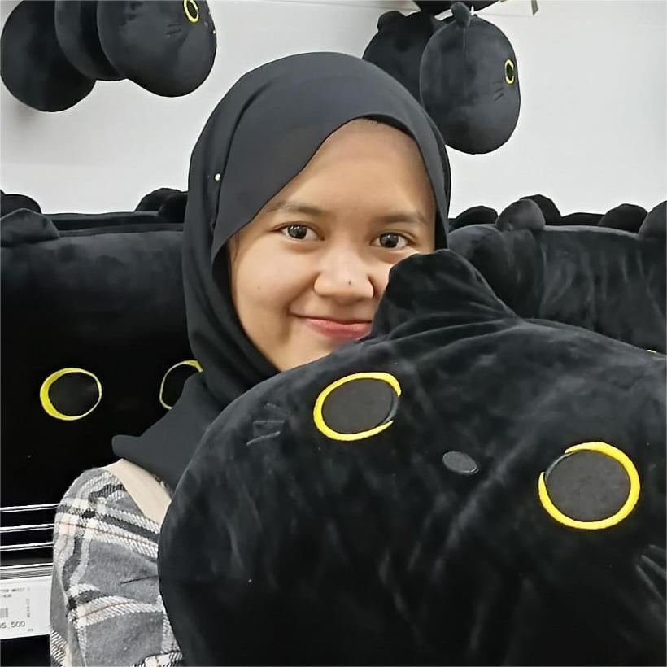

(๑ᵔ⤙ᵔ๑)
esyleasy@gmail.com
NIM 2225240193
Kelompok 2
⊹ Mahasiswa aktif semester 4 Program Studi Pendidikan Matematika Universitas Sultan Ageng Tirtayasa yang memiliki ketertarikan pada kegiatan pengelolaan administrasi, kerja tim, serta pengembangan kemampuan diri. Memiliki pengalaman dalam kegiatan organisasi yang membantu melatih tanggung jawab, komunikasi, dan kerja sama. Terbiasa bekerja secara teliti, terstruktur, dan disiplin. Memiliki motivasi untuk terus belajar, meningkatkan soft skill, serta berkontribusi secara positif dalam lingkungan akademik maupun kegiatan kemahasiswaan. ⊹
⋆ ˚｡⋆୨୧˚ Applications I Use
MS Word Docs MS Excel Sheets Canva Notion